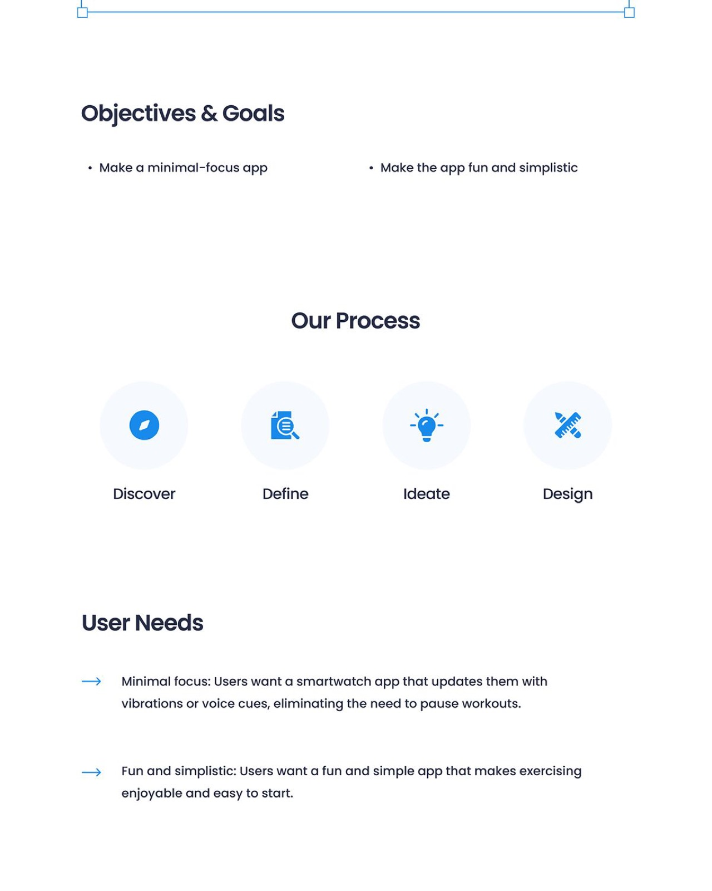
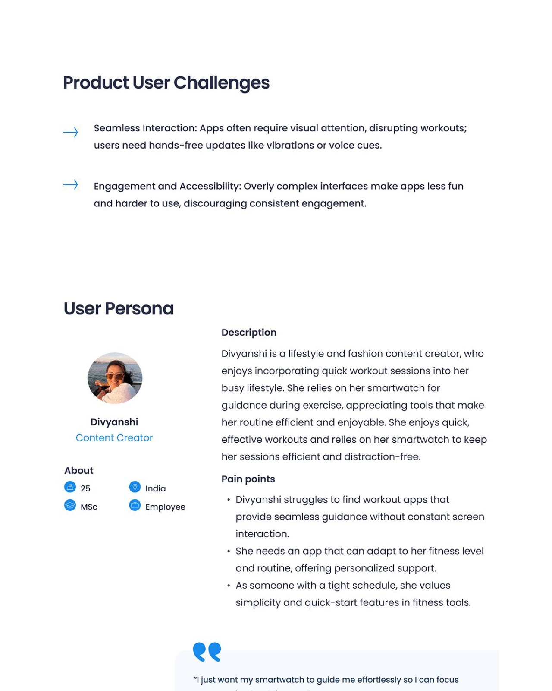
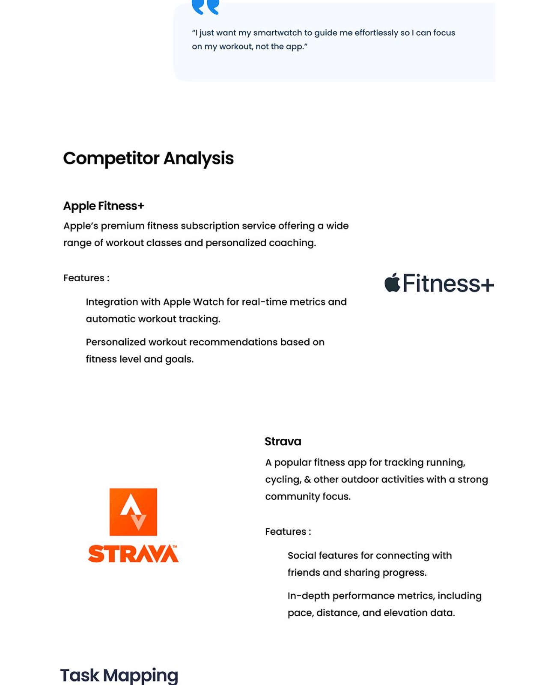
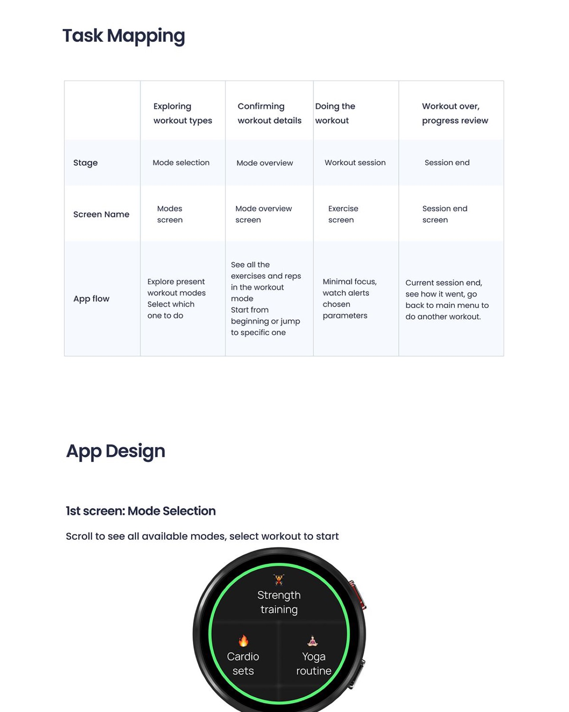
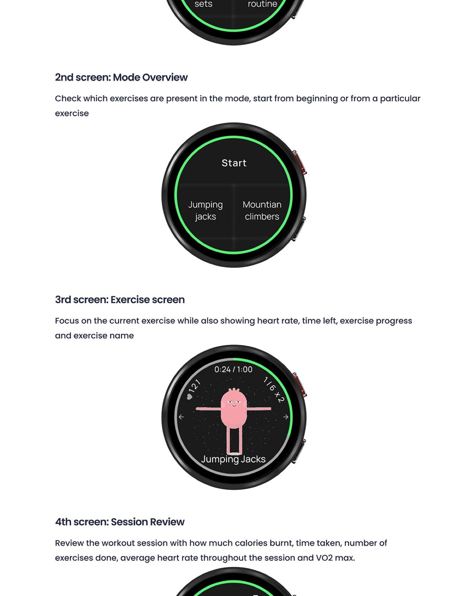
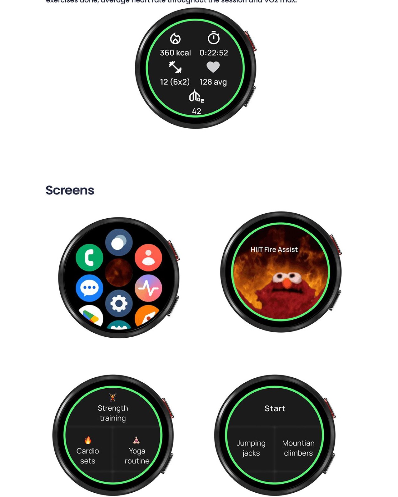

HIIT Fire Assist UX/UI
A UX case study for a smartwatch workout app aimed at hands-free, low-attention use during exercise. The write-up moves from product user challenges and a user persona to task mapping and the final round-watch screens, such as mode selection and a session summary showing calories, time and heart rate.
UX Case Study, Watch App Design
Open on Behance






